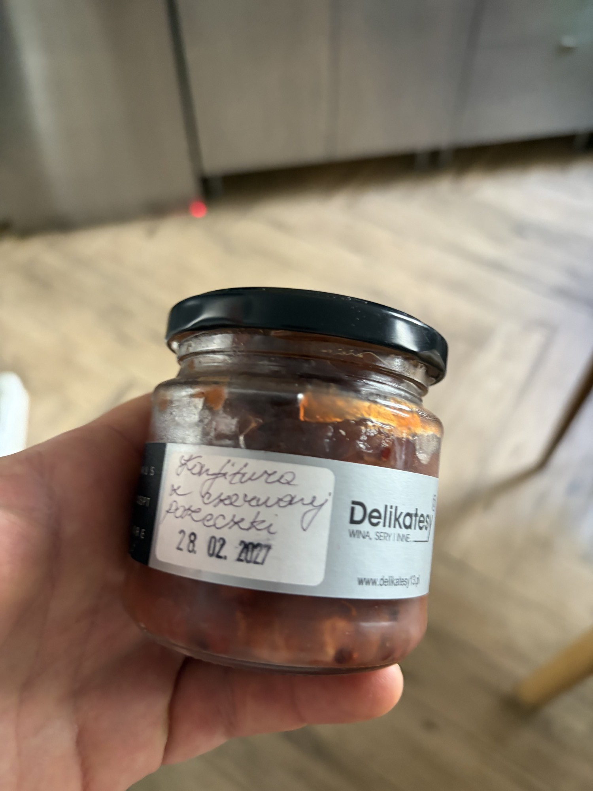

El Zagal Sobrasada de Mallorca
Традиционная мальоркинская собрасада — мягкая, намазываемая вяленая свинина с паприкой.
El Zagal Sobrasada de Mallorca
Что это такое
Собрасада — это культовая намазываемая вяленая колбаса с Майорки, защищенная под IGP Sobrasada de Mallorca. El Zagal — это уважаемый ремесленный производитель, работающий в рамках этой категории. Основой служат жирные свиные лопатка и грудинка, грубо измельченные, смешанные с сладкой и острой копченой паприкой (пиментон), солью и черным перцем. Колбаса набивается в натуральные оболочки, завязывается и проходит медленное созревание от трех до шести месяцев в влажном средиземноморском воздухе острова. Качество определяется: глубоким вишневым внутренним цветом, который поддается легкому нажиму, тонкой, слегка пыльной натуральной оболочкой без цветения нежелательной плесени и ароматом, насыщенным паприкой, с задним планом свиного аромата — не резким, не прогорклым. Текстура при нарезке мягкая, почти как паштет, с видимыми жировыми прожилками, которые легко размазываются по теплому хлебу.
Пищевая ценность
Типичная порция в 30 г является калорийной: примерно 120–140 ккал, 11–13 г жиров (примерно 40% насыщенных из свиного жира, остальное — мононенасыщенные), 4–5 г белка и 1 г углеводов. Содержание натрия значительное — 300–400 мг на порцию из-за соли для вяления. Замечательные минералы: железо (1–1.5 мг), цинк (в следовых количествах) и B12 из свинины. Это роскошная приправа — маленькие порции удовлетворяют. Не нужно предостерегать клиента от нее, но стоит построить подачу вокруг нее с кислотностью и овощами, чтобы сбалансировать жировую нагрузку.
Приготовление и подача
Принесите до комнатной температуры (18–20°C / 64–68°F) за 30 минут до подачи. Разрежьте оболочку и выложите внутренность; не нарезайте кружочками, как сухую салями. Для канапе намажьте 15 г на поджаренный хлеб из закваски или coca de vidre (майорская лепешка). Для составной тарелки сформируйте кнель из собрасады и слегка обожгите поверхность, чтобы растопить паприковый жир — это усиливает аромат. Чего НЕЛЬЗЯ делать: не нагревайте агрессивно или в микроволновке; паприка становится горькой при температуре выше 60°C. Не подавайте холодным из холодильника; жир застывает, и намазываемость теряется. Не выбрасывайте оболочку — ее можно мелко нарезать и использовать для приготовления винегрета из собрасады или обжарить до хрустящей корочки для украшения.
Традиционный и современный контекст употребления
На Майорке собрасаду едят на завтрак с хлебом и медом (sobrasada amb mel) или жарят с яйцами. На VIP-столах подавайте ее как роскошную намазку, а не как деревенскую закуску. Представьте ее как часть средиземноморской завтракной тарелки с мембрильо и свежим козьим сыром, или как предвкушение перед ужином: кнель собрасады на теплой поджаренной тосте с каплей меда из цветков апельсина и хлопьями соли Maldon.
Вкус и текстура
Первое впечатление — это дымный теплый вкус паприки — земляной, слегка сладкий, с медленно нарастающим покалыванием капсаицина, если использовалась острая смесь пиментон. Жир шелковистый, обволакивает язык, не оставляя жирности. Задний план — это вяленая свинина: чистая, ферментированная, напоминающая хорошо выдержанный чоризо, но мягче, более податливая. Текстура плотная и намазываемая, с редкими кусочками постного мяса, создающими контраст с расплавленной жировой матрицей.
Сочетания и состав
- Хлеб: Поджаренный хлеб из закваски, coca de vidre или тонкая ficelle. Хлеб должен иметь корочку и жевательную текстуру, чтобы выдерживать жир.
- Кислота: Уксус херес, маринованный шалот или варенье из красной смородины, представленное в этом разделе — собрасада и смородина создают великолепный сладко-солоноватый мост.
- Молочные продукты: Свежий молодой козий сыр (formatge de cabra), манчего курадо или центр бурраты. Молочная кислинка хорошо сочетается с паприковым жиром.
- Морепродукты: Да. Тонкий слой собрасады под жареным гребешком или креветкой работает великолепно — паприка и свиной жир усиливают сладость ракообразных. Попробуйте масло собрасады (1:1 с размягченным маслом), намазанное на жареных лангустинах.
- Вино: Сухое херес Amontillado, молодой майорский Callet или охлажденный Txakolina.
- Конкретное блюдо: Кростини с собрасадой, взбитым козьим сыром с медом и маринованной красной смородиной. Или перцы пикильо, фаршированные собрасадой, запеченные до тех пор, пока жир не растопится в стенках перца.